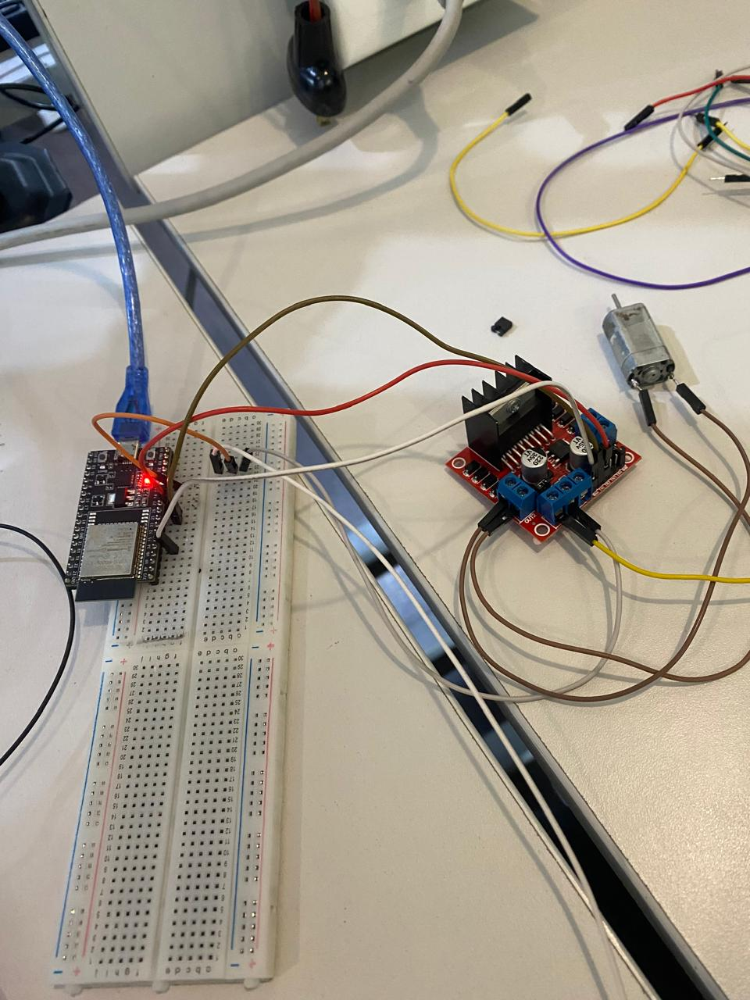

Práctica 1
Esta practiica podemos observar el uso de un circuito integrado 555 de manera astable en la cual, hace parpadear un diodo led dependiendo del valor de las resistencias.
Práctica 2
Esta practica consistio en usar un ESP32 para controlar de distantas maneras un led sea desde solo el ESP32, como con este y un botón y por medio de bluetooth.
ESP32 solo:
const int led=33
void setup () {
Serial. begin (115200);
pinMode (Led, OUTPUT) ;
}
void lo0p() {
digitalWrite(led,1);
delay (1000);
digitalwrite(led,0);
delay (1000);
}
ESP32 con botón:
const int led=33;
const int btn=34;
void setup() {
Serial.begin(115200);
pinMode(led,OUTPUT);
pinMode(btn,INPUT);
}
void loop() {
int estado = digitalRead(btn);
if(estado == 1 ){
digitalWrite(led,1);
}
else{
digitalWrite(led,0);
}
}
ESP32 Bluetooth:
#include "BluetoothSerial.h"
BluetoothSerial SerialBT;
const int led=33;
void setup() {
pinMode(led,OUTPUT);
Serial.begin(115200);
SerialBT.begin("AbrahamEsp32"); // Nombre del dispositivo Bluetooth
}
void loop() {
if (SerialBT.available()) {
String mensaje = SerialBT.readString();
Serial.println("Recibido: " + mensaje);
if(mensaje == "on" ){
digitalWrite(led,1);
}
else{
digitalWrite(led,0);
}}
delay(100);
}
Práctica 3
En esta practica observaremos a base de un ESP32 combinado a un puente H, sumado de un motor el cambio de dirección y su acelereación y desaceleración.
Aceleración:
#define in1 25
#define in2 26
int var=20;
<br>
void setup() {
<br>
pinMode(in1, OUTPUT);
pinMode(in2, OUTPUT);
ledcAttachChannel(3, 1000, 8 , 0);
Serial.begin(115200);
}
void loop() {
Serial.println(var);
ledcWrite(18, var);
digitalWrite(in1,1);
digitalWrite(in2,0);
delay(1000);
var=var+20;
if(var>255){
var=var-80;
}
delay(1000);
}

Cambio de dirección:
#define in1 25
#define in2 26
void setup() {
pinMode(in1, OUTPUT);
pinMode(in2, OUTPUT);
}
void loop() {
digitalWrite(in1, 1);
digitalWrite(in2, 0);
delay(3000);
digitalWrite(in1, 0);
digitalWrite(in2, 0);
delay(1000);
digitalWrite(in1, 0);
digitalWrite(in2, 1);
delay(1000); 
}
Proyecto Final: Carro Robot de Fútbol Controlado por PS4 (ESP32)
Objetivo del Proyecto
El proyecto consistió en el diseño y construcción de un carro robot teledirigido utilizando el microcontrolador ESP32 y un control PS4 (vía Bluetooth). El objetivo principal era crear una plataforma móvil con alta maniobrabilidad para participar y competir exitosamente en un torneo de fútbol de robots, moviendo una pelota y marcando goles.
Arquitectura y Tecnologías
La implementación se centró en la integración de tres áreas principales:
Marco Teórico
- Microcontrolador: Se seleccionó el ESP32 por su capacidad de doble núcleo y, fundamentalmente, por su conectividad Bluetooth para recibir comandos en tiempo real desde el control de PlayStation.
- Driver de Motor: Se utilizó un Puente H (L298N o similar) para gestionar la alta corriente requerida por los motores DC, ya que el ESP32 no puede alimentarlos directamente.
- Movimiento: Se implementó Tracción Diferencial mediante el envío de señales PWM (Modulación por Ancho de Pulso) a cada motor, permitiendo movimientos precisos (avance, retroceso y giros).
Materiales Clave
| Componente | Función Principal |
|---|---|
| ESP32 DevKit V1 | Cerebro del sistema, gestor de Bluetooth. |
| Puente H | Driver de potencia para los motores. |
| Control PS4 | Interfaz de usuario para comandos inalámbricos. |
| Pilas 3.7V / 2600 mAh | Fuente de alimentación. |
| Motores DC | Actuadores de tracción. |
| MDF / Impresión 3D | Construcción del chasis, carcasas y pala. |
Procedimiento General
El proyecto se ejecutó mediante la colaboración de equipos especializados:
- Electrónica: Diseño del diagrama del circuito, conexión del driver de motor, fusibles, baterías y cableado general.
- Programación: Desarrollo del firmware para la conexión Bluetooth y la lógica de control de motores, traduciendo los comandos del joystick a señales de movimiento.
- Mecánica: Diseño y ensamblaje del chasis de cuatro ruedas y la pala frontal para la interacción con la pelota.
Código de Programación (Arduino para ESP32)
Este firmware gestiona la conexión con el control PS4 y utiliza la lógica de tracción diferencial y ajuste de velocidad (con el gatillo R2) para el control del carro.
/**
* @file Robot_Futbol_PS4_ESP32.ino
* @brief Código para controlar un carro robot de fútbol usando un ESP32 y un control PS4.
* Incluye funciones para avance, retroceso, giros y tracción diferencial mediante Joysticks.
*/
// Bibliotecas necesarias:
#include <Arduino.h>
#include <PS4Controller.h>
// --- Configuración de Pines y Variables ---
int enA = 25; int enB = 14; // Pines de Enable (PWM)
int IN1 = 26; int IN2 = 27; int IN3 = 32; int IN4 = 33; // Pines de Dirección
#define R 0 // Canal LEDC para Motor Derecho
#define L 1 // Canal LEDC para Motor Izquierdo
int Speed = 210; // Velocidad base inicial
int threshold = 10; // Umbral de sensibilidad para Joysticks
// --- Declaración de Funciones de Movimiento ---
void forward(); void backward(); void left(); void right(); void stop();
void setMotor(int leftMotor, int rightMotor);
// --- Setup (Configuración Inicial) ---
void setup() {
Serial.begin(115200);
// *IMPORTANTE*: Reemplace la MAC Address con la de su control PS4.
PS4.begin("98:3b:8f:fc:0c:82");
Serial.println("Esperando control PS4...");
ledcAttachChannel(enA, 5000, 8, R);
ledcAttachChannel(enB, 5000, 8, L);
pinMode(IN1, OUTPUT); pinMode(IN2, OUTPUT);
pinMode(IN3, OUTPUT); pinMode(IN4, OUTPUT);
stop();
}
// --- Loop Principal (Ejecución Continua) ---
void loop() {
if (PS4.isConnected()) {
// 1. Ajuste de Velocidad con R2
Speed = map(PS4.R2Value(), 0, 255, 210, 255);


Proyecto Final: plataforma estabilizadora
En este proyecto pudimos realizar una plataforma que equilibra y centra una pelota por medio de una camara que esta configurada para detectar lo que uno le dice como colores por medio de una mascara de colores, asi tambien logramos sacar las coordenadas y mandar el error de que tan alejada estaba del centro de la camara o de una configuracion como otra mascara para la base. DEspues con esas coordenadas y por medio de bluetooth le mandabamos los datos del error a la Esp32 que esta controla dos servomotores los cuales por medio de esto regulan la inclinacion y angulo de los servomotores.
import cv2
import time
import numpy as np
import serial
import serial.tools.list_ports
esp32_port = 'COM14'
baud_rate = 115200
print("=" * 50)
print("Intentando conectar con ESP32...")
print(f"Puerto: {esp32_port} | Baudios: {baud_rate}")
def listar_puertos():
puertos = serial.tools.list_ports.comports()
print("\n Puertos COM disponibles:")
if len(puertos) == 0:
print(" No se encontraron puertos COM")
for puerto in puertos:
print(f" • {puerto.device}: {puerto.description}")
print()
listar_puertos()
try:
esp32 = serial.Serial(esp32_port, baud_rate, timeout=1)
time.sleep(2)
print(f" ¡Conectado al ESP32 en {esp32_port}!")
except serial.SerialException as e:
print(f" Error de conexión serial: {e}")
esp32 = None
except Exception as e:
print(f" Error inesperado: {e}")
esp32 = None
print("=" * 50)
cap = cv2.VideoCapture(0)
cap.set(cv2.CAP_PROP_FRAME_WIDTH, 640)
cap.set(cv2.CAP_PROP_FRAME_HEIGHT, 480)
if not cap.isOpened():
print("Error: No se pudo abrir la cámara")
exit()
center_angle = 90
current_x = center_angle
current_y = center_angle
DEAD_ZONE = 15 # Zona muerta reducida
smoothing = 0.3 # Suavizado reducido para respuesta más rápida
Kp = 0.15
Ki = 0.001
Kd = 0.20
prev_error_x = 0
prev_error_y = 0
integral_x = 0
integral_y = 0
MAX_INTEGRAL = 50
LOW_GREEN = np.array([35, 40, 40]) # H: 35-85 (verde), S: mínimo 40, V: mínimo 40
HIGH_GREEN = np.array([85, 255, 255]) # Rango amplio para captar diferentes tonos de verde
AREA_MIN_PLATAFORMA = 1000 # Área mínima del cuadrado
LOW_PURPLE = np.array([125, 50, 50]) # H: 125-155 (morado/magenta), S: mínimo 50, V: mínimo 50
HIGH_PURPLE = np.array([155, 255, 255]) # Cubre tonos morados y magentas
AREA_MIN_PELOTA = 200
RADIO_MIN_PELOTA = 8
def constrain(value, min_val, max_val):
return max(min_val, min(max_val, value))
def update_kp(val):
global Kp
Kp = val / 100.0 # Slider 0-100, valor real 0.00-1.00
print(f"Kp = {Kp:.3f}")
def update_ki(val):
global Ki
Ki = val / 1000.0 # Slider 0-100, valor real 0.000-0.100
print(f"Ki = {Ki:.4f}")
def update_kd(val):
global Kd
Kd = val / 100.0 # Slider 0-100, valor real 0.00-1.00
print(f"Kd = {Kd:.3f}")
cv2.namedWindow('Control PID')
cv2.createTrackbar('Kp x100', 'Control PID', int(Kp * 100), 100, update_kp)
cv2.createTrackbar('Ki x1000', 'Control PID', int(Ki * 1000), 100, update_ki)
cv2.createTrackbar('Kd x100', 'Control PID', int(Kd * 100), 100, update_kd)
prev_time = time.time()
print("=" * 50)
print("Sistema de Balance: Plataforma VERDE + Pelota MORADA")
print("=" * 50)
print("CONFIGURACIÓN:")
print(f" • Centro servos: {center_angle}° (Rango: 0-180°)")
print(f" • Zona muerta: ±{DEAD_ZONE} píxeles")
print(f" • Suavizado: {smoothing}")
print(f" • PID: Kp={Kp} Ki={Ki} Kd={Kd}")
print("\nDETECCIÓN:")
print(" • PLATAFORMA VERDE (HSV): Detecta área más grande de tonos verdes")
print(f" Rango H: {LOW_GREEN[0]}-{HIGH_GREEN[0]} | S: {LOW_GREEN[1]}-{HIGH_GREEN[1]} | V: {LOW_GREEN[2]}-{HIGH_GREEN[2]}")
print(" • PELOTA MORADA: Posición para calcular error")
print(f" Rango H: {LOW_PURPLE[0]}-{HIGH_PURPLE[0]} | S: {LOW_PURPLE[1]}-{HIGH_PURPLE[1]} | V: {LOW_PURPLE[2]}-{HIGH_PURPLE[2]}")
print("\nCONTROLES:")
print(" • 'q' → Salir")
print(" • 'c' → Resetear integrales")
print(" • Sliders → Ajustar PID en tiempo real")
print("=" * 50)
frame_count = 0
fps_time = time.time()
fps = 0
while True:
ret, frame = cap.read()
if not ret:
print("Error: No se pudo leer frame de la cámara")
break
frame = cv2.flip(frame, 1)
height, width = frame.shape[:2]
centrox, centroy = width//2, height//2
hsv_plat = cv2.cvtColor(frame, cv2.COLOR_BGR2HSV)
mask_plataforma = cv2.inRange(hsv_plat, LOW_GREEN, HIGH_GREEN)
kernel_plat = np.ones((7,7), np.uint8)
mask_plataforma = cv2.morphologyEx(mask_plataforma, cv2.MORPH_CLOSE, kernel_plat)
mask_plataforma = cv2.morphologyEx(mask_plataforma, cv2.MORPH_OPEN, kernel_plat)
mask_plataforma = cv2.dilate(mask_plataforma, kernel_plat, iterations=1)
contours_plat, _ = cv2.findContours(mask_plataforma, cv2.RETR_EXTERNAL, cv2.CHAIN_APPROX_SIMPLE)
area_max_plat = 0
contorno_plat = None
centro_plataforma = None
rectangulo_info = None
for c in contours_plat:
area = cv2.contourArea(c)
if area > area_max_plat and area > AREA_MIN_PLATAFORMA:
area_max_plat = area
contorno_plat = c
rectangulo_info = cv2.minAreaRect(c)
M = cv2.moments(c)
if M["m00"] != 0:
cx_plat = int(M["m10"] / M["m00"])
cy_plat = int(M["m01"] / M["m00"])
centro_plataforma = (cx_plat, cy_plat)
hsv = cv2.cvtColor(frame, cv2.COLOR_BGR2HSV)
mask_pelota = cv2.inRange(hsv, LOW_PURPLE, HIGH_PURPLE)
kernel_pelota = np.ones((5,5), np.uint8)
mask_pelota = cv2.morphologyEx(mask_pelota, cv2.MORPH_OPEN, kernel_pelota)
mask_pelota = cv2.morphologyEx(mask_pelota, cv2.MORPH_CLOSE, kernel_pelota)
mask_pelota = cv2.dilate(mask_pelota, kernel_pelota, iterations=1)
contours_pelota, _ = cv2.findContours(mask_pelota, cv2.RETR_EXTERNAL, cv2.CHAIN_APPROX_SIMPLE)
area_max_pelota = 0
contorno_pelota = None
centro_pelota = None
radio_pelota = 0
for c in contours_pelota:
area = cv2.contourArea(c)
if area > area_max_pelota:
area_max_pelota = area
contorno_pelota = c
(x_pel, y_pel), radio_pelota = cv2.minEnclosingCircle(c)
if radio_pelota > RADIO_MIN_PELOTA and area > AREA_MIN_PELOTA:
centro_pelota = (int(x_pel), int(y_pel))
out_original = frame.copy()
mask_combinada = cv2.bitwise_or(mask_plataforma, mask_pelota)
out_deteccion = cv2.cvtColor(mask_combinada, cv2.COLOR_GRAY2BGR)
# Verde para plataforma, Morado para pelota
out_deteccion[mask_plataforma > 0] = [0, 255, 0] # Verde
out_deteccion[mask_pelota > 0] = [255, 0, 255] # Magenta/Morado
current_time = time.time()
dt = current_time - prev_time
prev_time = current_time
if dt < 0.001:
dt = 0.001
plataforma_detectada = (contorno_plat is not None and area_max_plat > AREA_MIN_PLATAFORMA and centro_plataforma is not None)
pelota_detectada = (contorno_pelota is not None and centro_pelota is not None)
if plataforma_detectada:
if rectangulo_info:
box = cv2.boxPoints(rectangulo_info)
box = np.intp(box)
cv2.drawContours(out_original, [box], 0, (0, 255, 0), 3)
cv2.drawContours(out_deteccion, [box], 0, (0, 255, 0), 2)
cv2.circle(out_original, centro_plataforma, 12, (0, 255, 0), 3)
cv2.circle(out_original, centro_plataforma, 5, (0, 255, 0), -1)
cv2.putText(out_original, "PLATAFORMA", (centro_plataforma[0]-40, centro_plataforma[1]-20),
cv2.FONT_HERSHEY_SIMPLEX, 0.5, (0, 255, 0), 2)
if pelota_detectada:
cv2.circle(out_original, centro_pelota, int(radio_pelota), (255, 0, 255), 2)
cv2.circle(out_original, centro_pelota, 5, (255, 0, 255), -1)
cv2.putText(out_original, "PELOTA", (centro_pelota[0]-30, centro_pelota[1]+25),
cv2.FONT_HERSHEY_SIMPLEX, 0.5, (255, 0, 255), 2)
cv2.line(out_original, centro_plataforma, centro_pelota, (255, 0, 255), 2)
cv2.line(out_deteccion, centro_plataforma, centro_pelota, (255, 255, 255), 2)
error_x = (centro_pelota[0] - centro_plataforma[0])
error_y = (centro_pelota[1] - centro_plataforma[1])
if abs(error_x) < DEAD_ZONE:
error_x = 0
if abs(error_y) < DEAD_ZONE:
error_y = 0
integral_x += error_x * dt
integral_y += error_y * dt
integral_x = constrain(integral_x, -MAX_INTEGRAL, MAX_INTEGRAL)
integral_y = constrain(integral_y, -MAX_INTEGRAL, MAX_INTEGRAL)
derivative_x = (error_x - prev_error_x) / dt
derivative_y = (error_y - prev_error_y) / dt
output_x = Kp*error_x + Ki*integral_x + Kd*derivative_x
output_y = Kp*error_y + Ki*integral_y + Kd*derivative_y
prev_error_x = error_x
prev_error_y = error_y
delta_x = output_x * 0.15
delta_y = output_y * 0.15
target_x = center_angle + delta_x
target_y = center_angle + delta_y
current_x = current_x * (1 - smoothing) + target_x * smoothing
current_y = current_y * (1 - smoothing) + target_y * smoothing
current_x = constrain(current_x, 0, 110)
current_y = constrain(current_y, 0, 110)
if esp32:
mensaje = f"{int(current_x)},{int(current_y)}\n"
try:
esp32.write(mensaje.encode())
if esp32.in_waiting > 0:
respuesta = esp32.readline().decode('utf-8', errors='ignore').strip()
if respuesta and frame_count % 30 == 0:
print(f"üì° ESP32: {respuesta}")
except Exception as e:
if frame_count % 30 == 0:
print(f"✗ Error: {e}")
if frame_count % 5 == 0:
print(f"✓ X={int(current_x):3d}° Y={int(current_y):3d}° | Err X={-error_x:4d} Y={-error_y:4d} | Out X={output_x:6.1f} Y={output_y:6.1f}")
cv2.putText(out_original, f"Error X:{-error_x} Y:{-error_y}", (10,30),
cv2.FONT_HERSHEY_SIMPLEX, 0.6, (255,255,0), 2)
cv2.putText(out_original, f"Servo X:{int(current_x)} Y:{int(current_y)}", (10,60),
cv2.FONT_HERSHEY_SIMPLEX, 0.6, (255,255,0), 2)
cv2.putText(out_original, f"Distancia: {int(np.sqrt(error_x**2 + error_y**2))} px", (10,90),
cv2.FONT_HERSHEY_SIMPLEX, 0.5, (0,255,255), 2)
else:
cv2.putText(out_original, "PELOTA NO DETECTADA", (10,30),
cv2.FONT_HERSHEY_SIMPLEX, 0.7, (0,165,255), 2)
integral_x = 0
integral_y = 0
prev_error_x = 0
prev_error_y = 0
current_x = current_x * (1 - smoothing*0.5) + center_angle * smoothing * 0.5
current_y = current_y * (1 - smoothing*0.5) + center_angle * smoothing * 0.5
if esp32 and frame_count % 10 == 0:
try:
esp32.write(f"{int(current_x)},{int(current_y)}\n".encode())
except:
pass
if frame_count % 30 == 0:
print(f"⚠ Solo plataforma. Centrando: X={int(current_x)}° Y={int(current_y)}°")
else:
cv2.putText(out_original, "PLATAFORMA NO DETECTADA", (10,30),
cv2.FONT_HERSHEY_SIMPLEX, 0.7, (0,0,255), 2)
integral_x = 0
integral_y = 0
prev_error_x = 0
prev_error_y = 0
current_x = current_x * (1 - smoothing*0.5) + center_angle * smoothing * 0.5
current_y = current_y * (1 - smoothing*0.5) + center_angle * smoothing * 0.5
if esp32 and frame_count % 10 == 0:
try:
esp32.write(f"{int(current_x)},{int(current_y)}\n".encode())
except:
pass
if frame_count % 30 == 0:
print(f"⚠ Sin detección. Centrando: X={int(current_x)}° Y={int(current_y)}°")
cv2.circle(out_original, (centrox, centroy), DEAD_ZONE, (128,128,128), 1)
cv2.line(out_original, (centrox-15, centroy), (centrox+15, centroy), (128,128,128), 1)
cv2.line(out_original, (centrox, centroy-15), (centrox, centroy+15), (128,128,128), 1)
cv2.putText(out_original, f"Plat:{int(area_max_plat)} Pel:{int(area_max_pelota)}", (10,height-40),
cv2.FONT_HERSHEY_SIMPLEX, 0.5, (200,200,200), 1)
cv2.putText(out_original, f"PID: Kp={Kp:.2f} Ki={Ki:.3f} Kd={Kd:.2f}", (10,120),
cv2.FONT_HERSHEY_SIMPLEX, 0.5, (255,200,0), 2)
frame_count += 1
if time.time() - fps_time > 1.0:
fps = frame_count
frame_count = 0
fps_time = time.time()
cv2.putText(out_original, f"FPS: {fps}", (width-100, 30),
cv2.FONT_HERSHEY_SIMPLEX, 0.6, (0,255,0), 2)
cv2.imshow("Sistema de Balance - Original", out_original)
cv2.imshow("Deteccion: Plataforma(Verde) + Pelota(Morado)", out_deteccion)
key = cv2.waitKey(1) & 0xFF
if key == ord('q'):
break
elif key == ord('c'):
integral_x = 0
integral_y = 0
print("Integrales reseteadas")
print("\nCerrando sistema...")
cap.release()
if esp32:
esp32.write(f"{center_angle},{center_angle}\n".encode())
time.sleep(0.1)
esp32.close()
print("Conexión serial cerrada")
cv2.destroyAllWindows()
print("Sistema finalizado")
Codigo de Esp para la plataforma con servo
```
include
include
String device_name = "ESP32-BT-Slave"; BluetoothSerial SerialBT;
const int PIN_SERVO_X = 18; const int PIN_SERVO_Y = 19;
Servo servoX; Servo servoY;
const int PWM_MIN = 500; const int PWM_MAX = 2400;
const int CENTRO = 90;
String inputString = ""; bool stringComplete = false;
int posicionX = CENTRO; int posicionY = CENTRO; unsigned long ultimoComando = 0; const unsigned long TIMEOUT = 2000;
unsigned long contadorComandos = 0; unsigned long ultimoDebug = 0; const unsigned long INTERVALO_DEBUG = 1000; // Mostrar info cada 1 segundo
void setup() { Serial.begin(115200); SerialBT.begin(device_name);
delay(1000);
inputString.reserve(20); ESP32PWM::allocateTimer(0); ESP32PWM::allocateTimer(1); ESP32PWM::allocateTimer(2); ESP32PWM::allocateTimer(3);
servoX.attach(PIN_SERVO_X, PWM_MIN, PWM_MAX); servoY.attach(PIN_SERVO_Y, PWM_MIN, PWM_MAX);
servoX.write(CENTRO); servoY.write(CENTRO);
delay(1000);
Serial.println("\n========================================"); Serial.println("ESP32 - Sistema de Balance BLUETOOTH"); Serial.println("========================================"); Serial.print("Nombre Bluetooth: "); Serial.println(device_name); Serial.print("Servo X en GPIO "); Serial.println(PIN_SERVO_X); Serial.print("Servo Y en GPIO "); Serial.println(PIN_SERVO_Y); Serial.print("Posicion inicial: "); Serial.print(CENTRO); Serial.println(" grados"); Serial.println("========================================"); Serial.println("Esperando conexion Bluetooth..."); Serial.println("========================================\n");
SerialBT.println("ESP32 Balance System Ready"); SerialBT.println("Waiting for commands...");
ultimoComando = millis(); ultimoDebug = millis(); }
void loop() { while (SerialBT.available()) { char inChar = (char)SerialBT.read();
if (inChar == '\n' || inChar == '\r') {
if (inputString.length() > 0) {
stringComplete = true;
}
} else {
inputString += inChar;
}
}
if (stringComplete) { procesarComando(); inputString = ""; stringComplete = false; ultimoComando = millis(); }
if (millis() - ultimoDebug > INTERVALO_DEBUG) { mostrarEstado(); ultimoDebug = millis(); }
if (millis() - ultimoComando > TIMEOUT) { volverAlCentro(); } }
void procesarComando() { contadorComandos++;
Serial.print("[BT-CMD #"); Serial.print(contadorComandos); Serial.print("] '"); Serial.print(inputString); Serial.print("' -> ");
int comaIndex = inputString.indexOf(',');
if (comaIndex > 0) { String valorXStr = inputString.substring(0, comaIndex); String valorYStr = inputString.substring(comaIndex + 1);
int xRecibido = valorXStr.toInt();
int yRecibido = valorYStr.toInt();
Serial.print("X=");
Serial.print(xRecibido);
Serial.print(" Y=");
Serial.print(yRecibido);
xRecibido = constrain(xRecibido, 0, 180);
yRecibido = constrain(yRecibido, 0, 180);
if (xRecibido != posicionX || yRecibido != posicionY) {
Serial.print(" | Moviendo: X(");
Serial.print(posicionX);
Serial.print("→");
Serial.print(xRecibido);
Serial.print("°) Y(");
Serial.print(posicionY);
Serial.print("→");
Serial.print(yRecibido);
Serial.println("°)");
} else {
Serial.println(" | Sin cambio");
}
posicionX = xRecibido;
posicionY = yRecibido;
servoX.write(posicionX);
servoY.write(posicionY);
SerialBT.print("Recibido: ");
SerialBT.print(posicionX);
SerialBT.print(",");
SerialBT.println(posicionY);
} else { Serial.println("ERROR - Formato invalido"); SerialBT.println("Error: Formato invalido. Use X,Y"); } } void mostrarEstado() { if (SerialBT.hasClient()) { Serial.print("[ESTADO] BT conectado | X="); } else { Serial.print("[ESTADO] BT desconectado | X="); } Serial.print(posicionX); Serial.print("° Y="); Serial.print(posicionY); Serial.print("° | Cmds: "); Serial.print(contadorComandos); Serial.print(" | Sin datos: "); Serial.print((millis() - ultimoComando) / 1000); Serial.println("s"); }
void volverAlCentro() { static bool mensajeMostrado = false; static unsigned long ultimoCentrado = 0;
if (millis() - ultimoCentrado < 500) { return; } ultimoCentrado = millis();
if (posicionX != CENTRO || posicionY != CENTRO) { if (!mensajeMostrado) { Serial.println("\n[TIMEOUT] Volviendo al centro..."); SerialBT.println("Timeout: Centering..."); mensajeMostrado = true; }
if (posicionX < CENTRO) posicionX += 2;
if (posicionX > CENTRO) posicionX -= 2;
if (posicionY < CENTRO) posicionY += 2;
if (posicionY > CENTRO) posicionY -= 2;
if (abs(posicionX - CENTRO) == 1) posicionX = CENTRO;
if (abs(posicionY - CENTRO) == 1) posicionY = CENTRO;
servoX.write(posicionX);
servoY.write(posicionY);
Serial.print(" Centrando: X=");
Serial.print(posicionX);
Serial.print("° Y=");
Serial.print(posicionY);
Serial.println("°");
} else {
if (mensajeMostrado) {
Serial.println("[CENTRADO] Completo\n");
mensajeMostrado = false;
ultimoComando = millis();
}
}
}
```